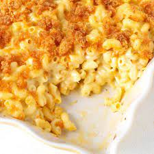

Creamy Mac And Cheese

Ingedients
- Elbow Macaroni
- 3 of your favorite cheeses
- Butter
- Bread Crumbs
- Starch
- Milk
Directions
- Boil the pasta, drain.
- Make the cheese sauce by combining a fat (butter), and starch (flour), then whisking in the milk products.
- Cook the sauce until its nice and thick.
- Add in shredded cheese, stir well
- Combine cheese with cooked pasta
- Transfer half of the mac and cheese to a baking dish, sprinkle with more shredded cheese.
- Top with the rest of the mac and cheese, top with more shredded cheese.
- Top with bread crumbs and toss in the oven until top layer is browning
- ENJOY!